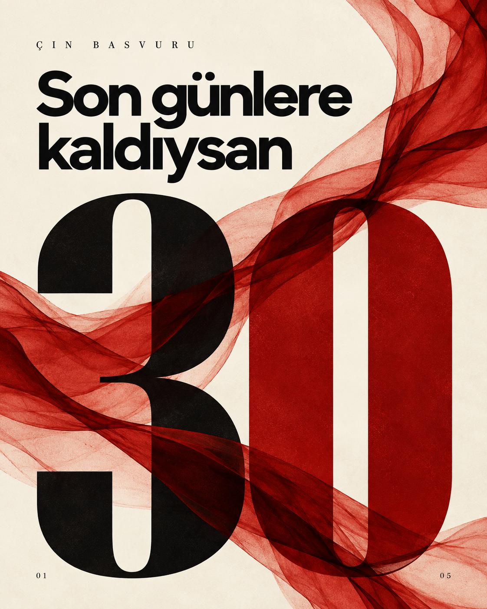
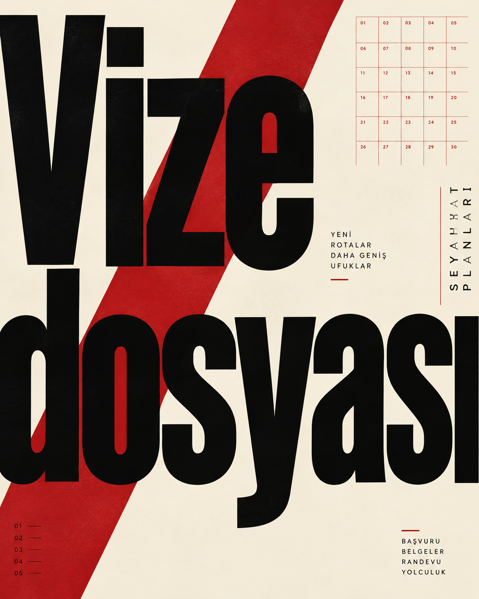
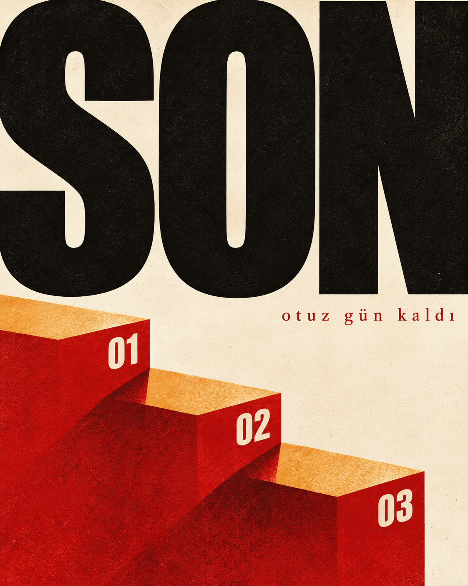
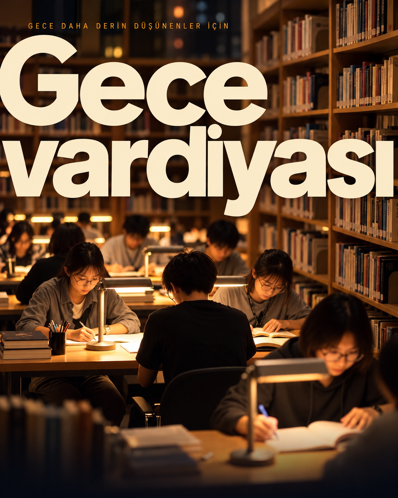
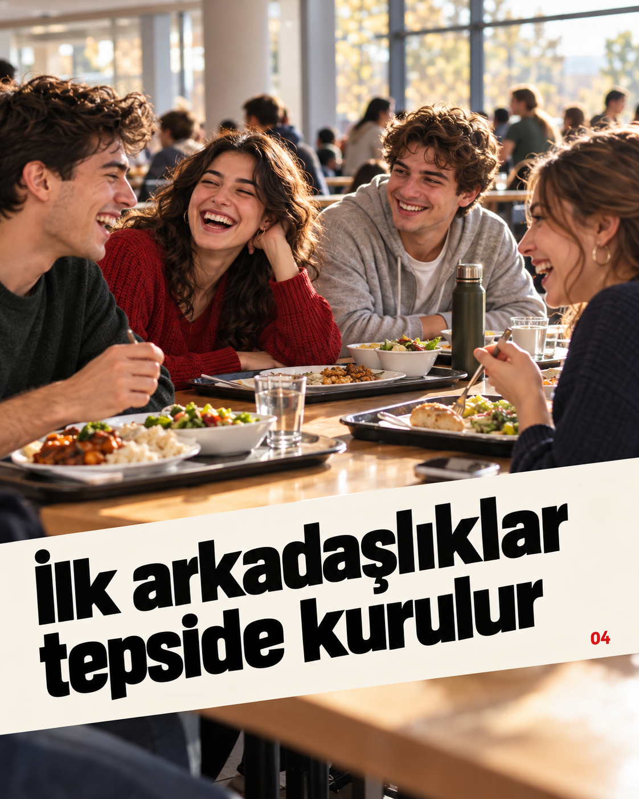
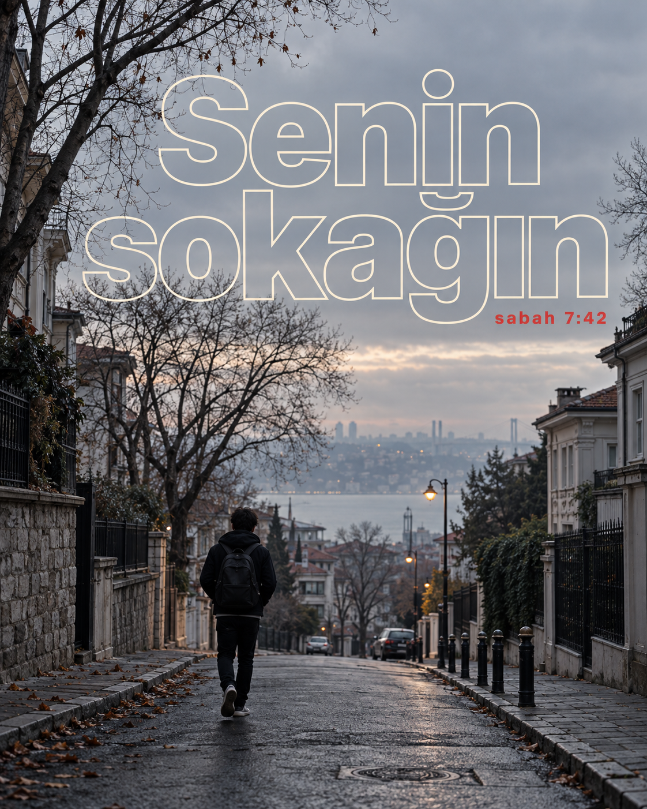
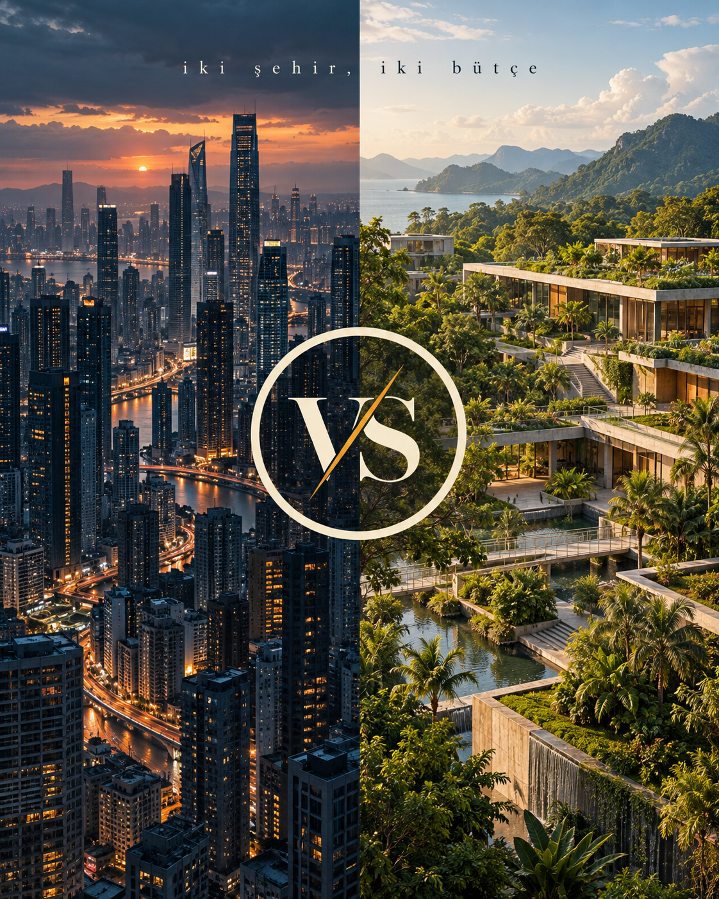
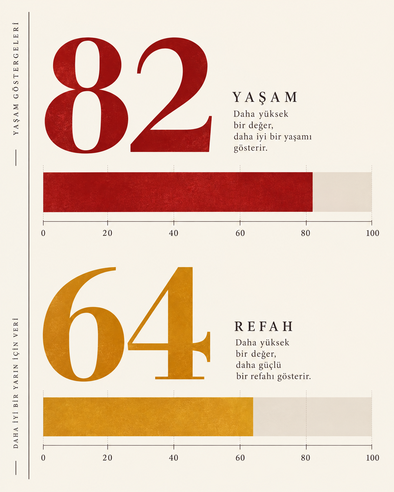
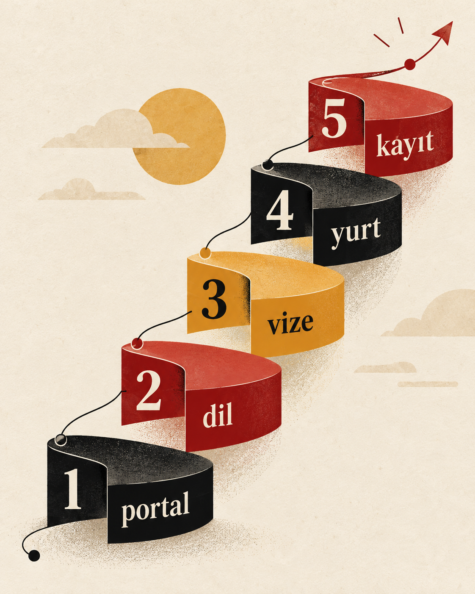

ASYA'DA EĞİTİM · BRAND STUDIO
ASYA'DA EĞİTİM · BRAND STUDIO
INSTAGRAM STUDIO · PHASE 1C — IMAGE-FIRST CREATIVE EXPLORATION
Dokuz konsept.
Sıfır şablon.
ChatGPT Image (image_generate, gpt-image-2, bağlı ChatGPT aboneliği) yaratıcı tasarımcı olarak çalıştı: 9 bağımsız, bitmiş görünümlü kompozisyon. Başka sağlayıcı ikamesi yok. Logo modele hiç istenmedi — mühür yalnızca galeri çerçevesinde, kompozisyona dokunmadan gösteriliyor. Bu fazda yeniden çizim, seçim ve şablon yok.
Üç yön, üçer kompozisyon

kanonik mühür — ayrı sunulur
kanonik mühür — ayrı sunulur
kanonik mühür — ayrı sunulur
kanonik mühür — ayrı sunulur
kanonik mühür — ayrı sunulur
kanonik mühür — ayrı sunulur
kanonik mühür — ayrı sunulur
kanonik mühür — ayrı sunulur
kanonik mühür — ayrı sunulurHer konsept ne söylüyor?
Dev "30" geri sayımı
- YÖN
- Ultra-kalın rakam + diyagonal mürekkep şeritleri; asimetri cesur.
- ÜRETİM
- ChatGPT Image, salt metin istem. Logo istenmedi, çıkmadı.
- ELEŞTİRİ
- Türkçe doğru, kompozisyon ajans seviyesi. Kremler metinle şerit arasında kalıyor ama okunurluk korunuyor. Güçlü kapak adayı.
Tipografi duvarı
- YÖN
- Kırpılmış dev grotesk + dönmüş kenar metni + takvim ızgarası; İsviçre disiplini.
- ÜRETİM
- ChatGPT Image, salt metin istem.
- ELEŞTİRİ
- "Vize dosyası" doğru; ızgara motifi sisteme taşınabilir. En disiplinli iş.
"SON" posteri
- YÖN
- Tek agresif jest + 3D basamaklar; minimalizm.
- ÜRETİM
- ChatGPT Image, salt metin istem.
- ELEŞTİRİ
- Çarpıcı; alt satırın son glifinde küçük bozukluk — keşif artefaktı, üretimde yeniden dizilir.
Gece vardiyası
- YÖN
- Gerçek referans fotoğrafla (jp-library.jpg) yönlendirilen sinematik kapak; dev "Gece vardiyası".
- ÜRETİM
- ChatGPT Image + 1 referans görsel; kompozisyon serbestçe yeniden kuruldu.
- ELEŞTİRİ
- Referans sadakati yüksek, tipografi temiz. Foto-yönün en güçlü kapağı.
Yemekhane anı
- YÖN
- Samimi kampüs anı + diyagonal bantta "İlk arkadaşlıklar tepside kurulur".
- ÜRETİM
- ChatGPT Image, salt metin istem. Logo/amblem çıkmadı.
- ELEŞTİRİ
- Neşe dozu yüksek; bant açısı akışı kesmiyor. Gençlik çekiciliği en yüksek kare.
Senin sokağın
- YÖN
- Kontur dev tip + gri sabah sokağı; poster-belgesel karışımı.
- ÜRETİM
- ChatGPT Image, salt metin istem.
- ELEŞTİRİ
- Coğrafya uyarısı: sokak İstanbul çıktı, Tokyo değil — şehir iddiasız sunulur. Tipografik kurgu ausgezeichnet; yeniden üretim gerekmez, etiket düzeltmesi yeter.
Şehir düellosu
- YÖN
- Bölünmüş diptik + VS halkası + "iki şehir, iki bütçe".
- ÜRETİM
- ChatGPT Image, salt metin istem. Tabela metni çıkmadı.
- ELEŞTİRİ
- Halka motifi Faz 1B diliyle akraba — sistem köprüsü kurulabilir. En güçlü bilgi kapağı.
82/64 barları
- YÖN
- Serif dev rakam + eksenli bar + yan ray; müze-grafik estetiği.
- ÜRETİM
- ChatGPT Image, salt metin istem.
- ELEŞTİRİ
- Rakamlar keşif amaçlı, gerçek veri değil. Tipografik olgunluk en yüksek işlerden.
Şerit merdiven
- YÖN
- Beş basamaklı şerit spiral: portal/dil/vize/yurt/kayıt.
- ÜRETİM
- ChatGPT Image, salt metin istem.
- ELEŞTİRİ
- Basamak sözcükleri doğru ("kayıt" noktasında küçük iz — artefakt). En oyuncu bilgi işi; vektöre dökümü en zorlu olan.
Ne yapılmadı?
Yeniden çizim, seçim, şablon ve mühendislik yok — insan seçimi bekleniyor. 10 görüntü çağrısı = 9 konsept + 1 yol-düzeltme tekrarı; sessiz ikame yok (Pollinations bu fazda kullanılmadı). Metinler keşif amaçlı yaklaşık; kesin metin seçim sonrası yeniden dizilir.
Faz-1C üretim manifestosu → · Kanonik manifest →
Mühür SHA-256: 8f5d46f0302c4cc7e3765d3bfce9445f842dbd92f1e0f8fbe99f9f509c77e11a